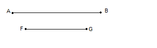
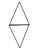
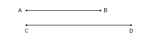

| 1. | Construct an isosceles triangle whose base is equal in length (congruent to) the segment FG, and whose legs are congruent to AB. |

| 2. | (a) | Construct two isosceles triangles with base CD and legs AB, which share a common base,
as shown in the example. |
Example
 |
| (b) | The leg and base lengths are in the ratio of 1 : √2. What are the measures of all 6 interior angles in the finished construction? |
||
| (c) | Confirm this by measuring them with a protractor, and explain this result. |
